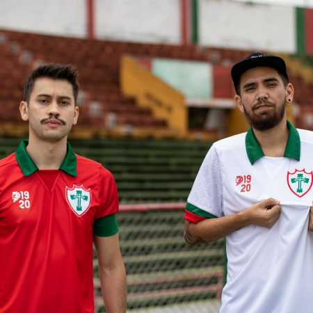

Portuguesa A Mais Querida, TRI-CAMPEÃ da Copa Do Arroz, fundada 25/08/1957 em Santana do São Francisco, antiga Carrapicho!
Fundada pelos Canoeiros, teve ilustres membros conhecidos como,Saudosos: Zé Tintinho, Lurdona, Suarino, Chibanga, lino, lirinho, Manoel Araujo Lobo etc.
 Whatsapp
Whatsapp
